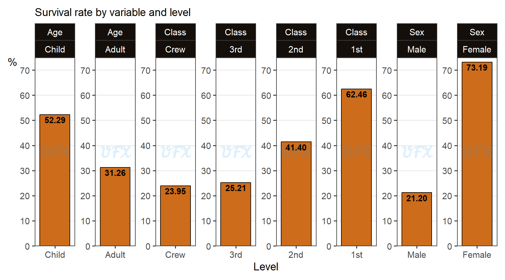

In this post of the series Intro to, I’ll give an introduction to the Logistic Regression.
Introduction
A linear model (LM) is given by:
\[ Y_i = \beta_0 + \beta_1x_1 + ...+\beta_nx_n + \varepsilon_i, \tag{1}\]
where:
\(Y_i\) is the response variable;
\(\beta_0\) is the intercept;
\(\beta_1\) is the slope coefficient of the explanatory variable \(x_1\) ;
\(\beta_n\) is the slope coefficient of theexplanatory variable \(x_n\) ;
\(\varepsilon_i\) is the error term.
Given that the response variable is a numeric continuous variable, a linear model establishes a linear relationship between the explanatory variables and the response variable.
We have a flexible generalization of ordinary linear regression called generalized linear model (GLM) to extend the application of linear models to other scenarios, such as going beyond the normal distribution.
A GLM generalizes linear regression by allowing the linear model to be linked to the response variable via a link function and allowing the magnitude of the variance of each measurement to be a function of its predicted value.
In a LM we have that,
\[E(Y_i)= \mu_i, \tag{2}\]
where:
\(E(.)\) is the expected value,
\(\mu_i\) is the expected value of \(Y_i\).
But with a GLM we have that,
\[G(\mu_i) = \beta_0 + \beta_1x_1 + ...+\beta_nx_n, \tag{3}\] where:
- \(\beta_0 + \beta_1x_1 + ...+\beta_nx_n\) is the linear predictor;
- \(G\) is a link funtion, that transforms the expected value of the response variable to the linear predictor.
A logistic regression is a GLM where the link function is given by a logit function, given by:
\[\log \left(\frac{p}{1-p}\right), \tag{4}\] where:
- \(p\) is the probability of the outcome of \(Y_i = 1\).
So logistic regression is a type of model technique used in situations where the response variable’s outcome is binary (0 or 1).
The logit function’s behavior for a probability is shown below.

We can see that for a proability lower than 0.5, the logit will be negative. Besides that, we can also see that the logit function is actually the logarithm of the odds \(\frac{p}{1-p}\).
Application
Disclaimer: because the goal of this article is to introduce logistics regression, some topics such as classification, accuracy, goodness of fit, intercept, and others will not be covered.
To apply in a real-world scenario, we will use the data set of the Titanic passengers (2021), which consists of 2,201 passengers with the following characteristics:
Class: Crew, 3rd, 2nd and 1st;
Sex: Male and Female;
Age: Child and Adult;
Survived: No and Yes.
The limited availability of lifeboats and the overall evacuation procedures influenced the decision-making process for which Titanic passengers were saved during the disaster. There were not enough lifeboats to accommodate all of the passengers and crew when the Titanic collided with an iceberg and began to sink.
The Titanic only had 20 lifeboats, with a total capacity of roughly half the number of passengers.
Before we begin modeling, let’s take a look at our data.

The majority of passengers (95.05%) were adults, with children accounting for a smaller proportion (4.95%). The crew class had the most members (40.21%), followed by the third class (32.08%), first class (14.77%), and second class (12.95%). Male passengers made up 78.65% of the total, while females made up 21.35%.
According to the survival rate, 32.30% of passengers survived the disaster, while 67.70% did not.
This graph sheds light on the demographics of the Titanic passengers, but our main goal here is to try to discover survival patterns based on those characteristics, so let’s first look at the survival rate for each level and variable.

Even though they made up less than 5% of the passengers, children had a higher survival rate (52.29%).
First-class passengers had the highest survival rate (62.46%), followed by second-class passengers (41.40%), indicating that the survival rate of class had a hierarchical behavior.
Female passengers had a significantly higher survival rate (73.19%) than male passengers (21.20%).
These findings highlight the varying effects of age, ticket class, and gender on survival during the Titanic disaster, with children, first-class passengers, and female passengers having a better chance of survival, despite not constituting the majority of passengers.
The evacuation procedure followed the “women and children first” policy, which prioritized women, children, and some crew members were exempt from this policy.
There were exceptions, with some men allowed on lifeboats if space was available or if they boarded without opposition. Confusion and miscommunication resulted in inefficient use of lifeboat spaces. As a result, many passengers, particularly lower-class men, were left on the sinking ship, risking their lives.
Now, we will try to consider all this factors in a single model to understand the effect of each one in the survival of this tragedy.
| term | estimate |
|---|---|
| ageAdult | -1.0615 |
| class3rd | -0.9201 |
| class2nd | -0.1604 |
| class1st | 0.8577 |
| sexFemale | 2.4201 |
First of all we see the estimate of the coefficients (\(\beta_i\)) for each variable, and because all variables are categoricals, we have a baseline for each one that serves as the reference level. But what do these figures mean?
Odds ratios
To better understand the practical implications of the coefficients, we can apply the coefficients’ exponential to obtain the odds ratios.
- Odds ratio (OR)
-
The odds ratio indicates how much the outcome odds change for a one-unit increase in the predictor variable (for continuous predictors) or when moving from one category to another (for categorical predictors).
Here is why, let’s say we have two logit’s (\(p_1\) and \(p_2\)), and we will subtract one from another, so:
\[ \begin{align} \mathrm{logit}_{p_1} - \mathrm{logit}_{p_2} &= \log \left( \frac{p_1}{1-p_1}\right) - \log \left( \frac{p_2}{1-p_2}\right)\\ &= \log \left( \frac{p_1}{1-p_1}\middle/ \frac{p_2}{1-p_2}\right).\\ \end{align} \tag{5}\]
So the difference between two logit functions is the logarithm of an odds ratio, which means that we can get the OR by applying an exponential function to the coefficients of a logistic model.
| term | estimate | OR |
|---|---|---|
| ageAdult | -1.0615 | 0.3459 |
| class3rd | -0.9201 | 0.3985 |
| class2nd | -0.1604 | 0.8518 |
| class1st | 0.8577 | 2.3577 |
| sexFemale | 2.4201 | 11.2465 |
Now that we have the OR of each level compared to their respective baseline (reference level), we can interpret them by looking at their magnitude, where if is:
equal to 1, it means that the predictor variable has no effect on the outcome odds;
greater than 1, it indicates an increase in the odds of the outcome;
less than 1, it indicates a decrease in the odds of the outcome.
Let’s take the example of an Adult in the model, it has a 34,59% chance to survive in comparison to a child (reference level), that means that being an adult reduces the odds of the outcome by approximately 65.4%.
So we can easily measure the impact by doing OR-1; if negative, the odds of the outcome are reduced; if positive, the odds of the outcome are increased.
| term | estimate | OR | OR-1 |
|---|---|---|---|
| ageAdult | -1.0615 | 0.3459 | -0.6541 |
| class3rd | -0.9201 | 0.3985 | -0.6015 |
| class2nd | -0.1604 | 0.8518 | -0.1482 |
| class1st | 0.8577 | 2.3577 | 1.3577 |
| sexFemale | 2.4201 | 11.2465 | 10.2465 |
As previously stated, being an adult reduced the odds of the outcome by approximately 65.4% when compared to being a child.
Passengers in the third class have their odds reduced by approximately 60.2% when compared to the crew, while passengers in the second class have their odds reduced by approximately 14.8%. Being in the first class, on the other hand, increases the odds of the outcome by approximately 135.8%.
Sex had the greatest impact, with being female increased the odds by approximately 1,024.7% when compared to being male.
Considerations
Logistic regression is an effective method for modeling binary phenomena.
Its ease of use and interpretability make it an appealing option for estimating probabilities and understanding the relationships between predictors and odds.
However, it is important to note that logistic regression assumes independence and linearity, which limits its applicability to complex nonlinear relationships and dependent data. When using logistic regression in practical scenarios, it is critical to carefully consider these benefits and drawbacks, especially when using to predict/classify something.